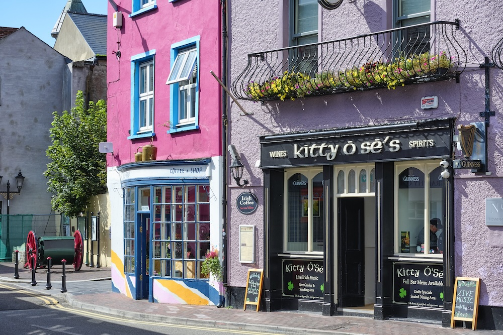

Kitty Ó Sé’s
Example post
Live Irish music in the bar. Keep an eye on the page for the latest session times.

Traditional Irish pub
Lunch and dinner served daily, with regular live Irish music.
Food
Irish bar food, with daily specials alongside the menu. Speak to the team about dietary requirements or allergies.
Music
“Never a dull night”
“Great place for live traditional music. You can always find live music and a cold pint.”
Music every night from March to November, with fewer sessions over winter.
See the latest updatesFacebook preview
Feed previewExample posts and website photos to show the layout. This is not a live Facebook feed.
Example post
Live Irish music in the bar. Keep an eye on the page for the latest session times.
Example post
Fish and chips, served with mushy peas and lemon. Lunch and dinner from noon until 9pm.
Example post
A session in the bar.
Swipe to see the other example posts
Visit